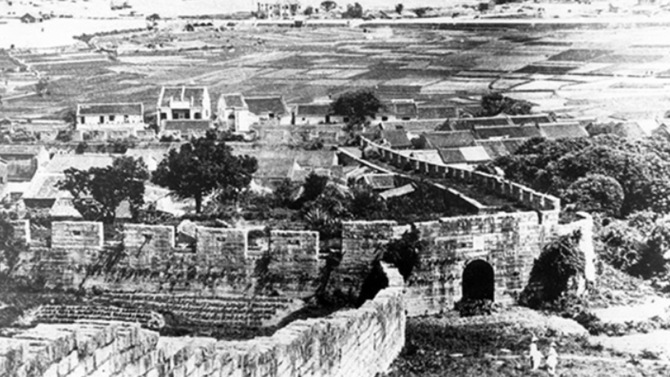
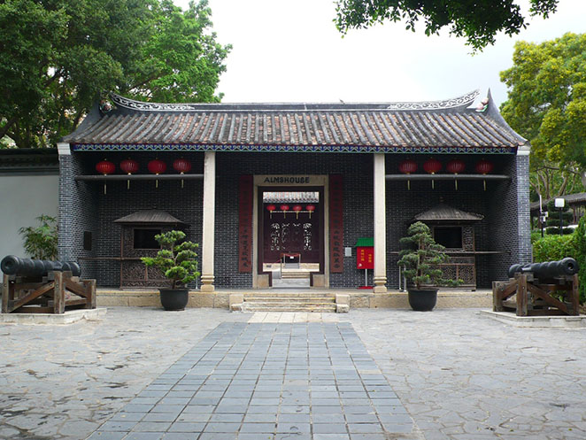
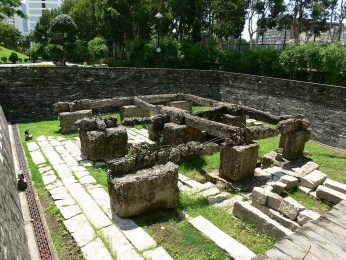
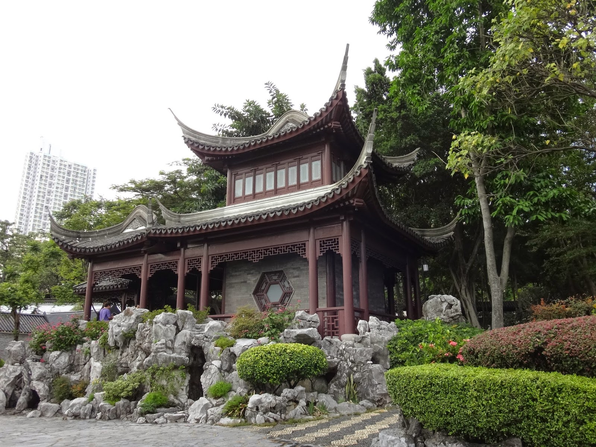
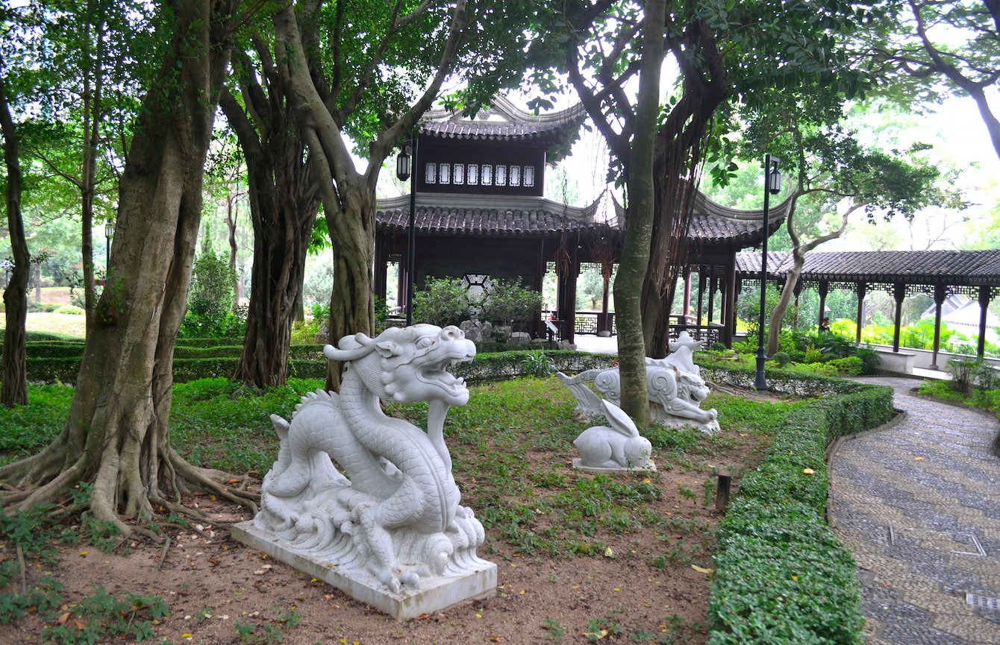
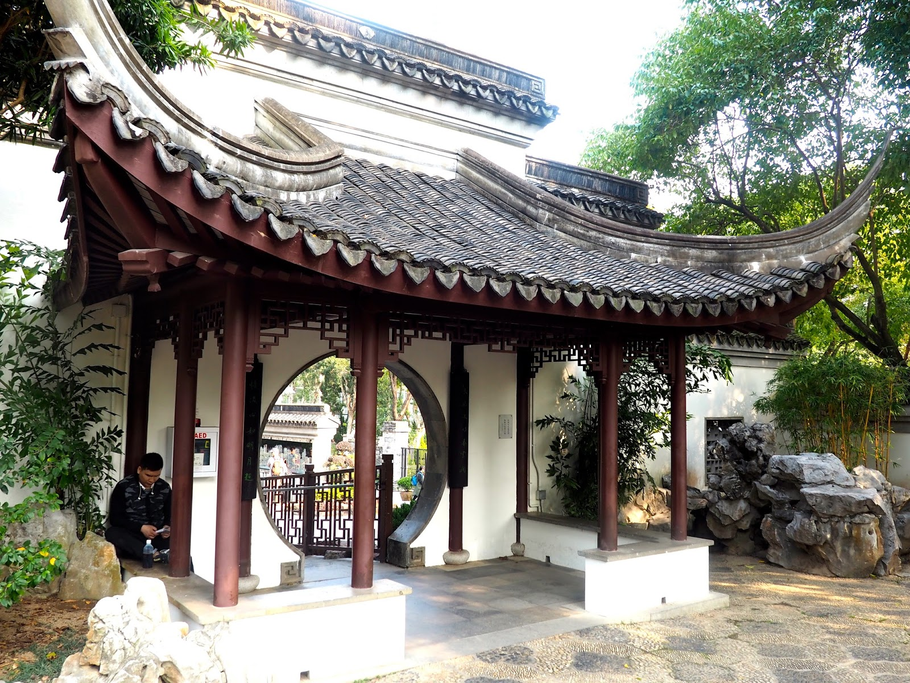
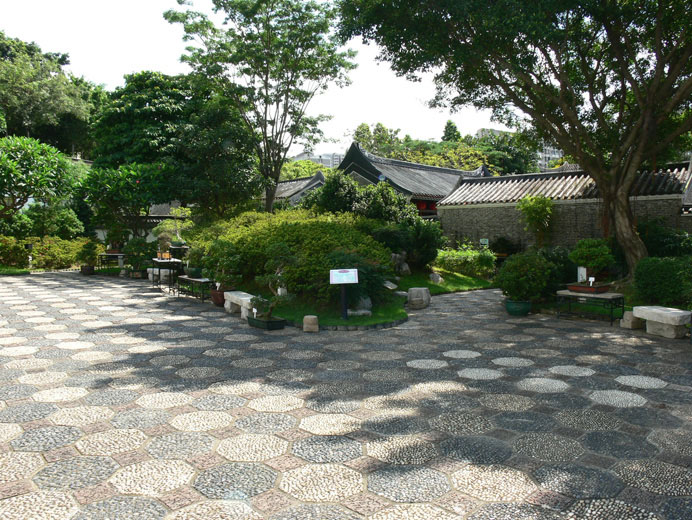
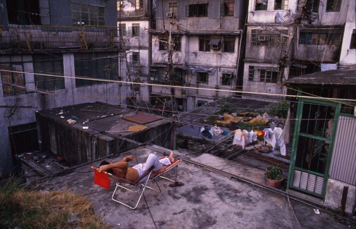

Kowloon: Beyond the myth:The Walled City of Kowloon
Introduction
About this WebsiteTravel Guide
Kowloon Walled City Park Kowloon Walled City Exhibition Nearby Food Spots(1) Nearby Food Spots(2) Kowloon City attractions Derivative Artworksothers
Contact Us
Kowloon Walled City Park
Overview
Kowloon Walled City Park is located in Kowloon City, Hong Kong. Its site was formerly the Kowloon Walled City, a place rich in history, culture, and mystery. After the walled city was demolished in 1993, the area was redeveloped into Kowloon Walled City Park, which opened to the public in 1995 and has since become a popular spot for residents and visitors.
History
During the Qing dynasty the site served as a military garrison. After the 1898
Convention for the Extension of Hong Kong Territory (the 99‑year lease of the
New Territories), the area became a special zone under a de facto “no‑man’s‑land”
policy — neither the Hong Kong government dared to administer it, the British
government did not want to, and the Chinese government could not. The walled
city later became densely populated and notorious for disorder, housing illegal
gambling, prostitution, unlicensed doctors, and unauthorized structures.

In 1987 the Hong Kong and Chinese governments reached an agreement to clear the walled city and convert the site into a park. During demolition some relics were preserved and integrated into the park’s design to reflect the former appearance of the walled city.
Eight Major Scenic Areas
The Yamen

Located at the park’s center, this is the only surviving historic building from the Kowloon Walled City and was once the Qing‑era Kowloon Patrol Yamen. Restored and converted into an exhibition hall, it displays the walled city’s history and the demolition process. Exhibits include stone tablets, an old cannon, and other artifacts.
The Old South Gate

The site of the walled city’s former South Gate is an important declared monument within the park where visitors can reflect on the walled city’s past. The remains preserve the “Kowloon Walled City” stone inscription and parts of the original foundations.
The Mountain View Pavilion

The two-storey Mountain View Pavilion ship‑shaped building from which visitors can look out toward Lion Rock and experience the “Lion Gazing Garden” atmosphere.
The Chess Garden

Four giant ground chessboards are provided so visitors can role‑play as chess pieces in a human‑sized game of Chinese chess, adding interactive fun.
The Garden of Chinese Zodiac

The Children’s Play Area showcases twelve zodiac sculptures carved from pale green and white stone. Each zodiac figure is arranged according to traditional Chinese geomancy and is suitable for family visits.
Eight Floral Walks

A plant‑focused area featuring eight themed paths, including the Pine Path, Bamboo Path, and Red‑Leaf Path, offering visitors diverse natural experiences.
Kuixing Pavilion and Guibi Rock

Named after the first four stars of the Big Dipper, this pavilion symbolizes blessings for scholars taking examinations. Nearby, the Gui Bi Stone (Returning Jade Stone) symbolizes Hong Kong’s return to China.
The Garden of Four Seasons

On the park’s west side, this garden displays seasonal flowers and Lingnan bonsai. The garden features a mosaic artwork called the “Five Bats, Longevity and Crane” made from pebbles and porcelain fragments, notable for its artistic value.
Kowloon Walled City Park Information
| Address | Junction of Tung Tau Tsuen Road and Tung Ching Road, Kowloon City |
| Park opening hours | 06:30–23:00 |
| Admission fees | Free |
| How to get there | About a 14‑minute walk from MTR Sung Wong Toi Station Exit B3 |
Related content


